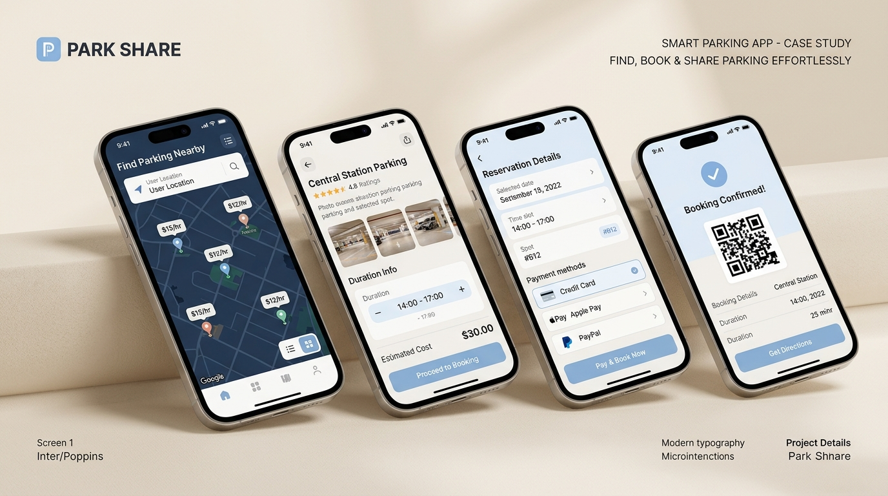

✦ Interactive Prototype ReadyPark Share — Smart Urban Parking & Host Sharing Platform
Connecting urban commuters with verified private parking bays, eliminating circling anxiety while empowering hosts to monetize unused driveways.
+34%
Reservation Speed
94%
Task Success Rate
4.8★
Beta Satisfaction